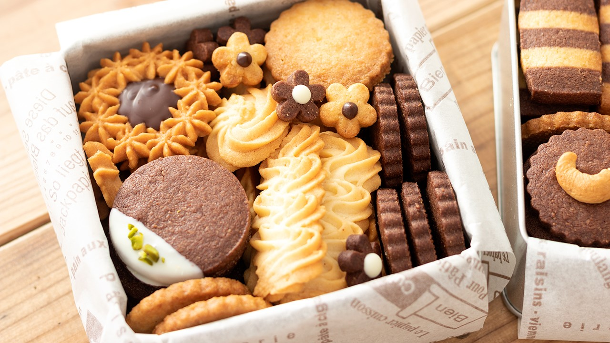
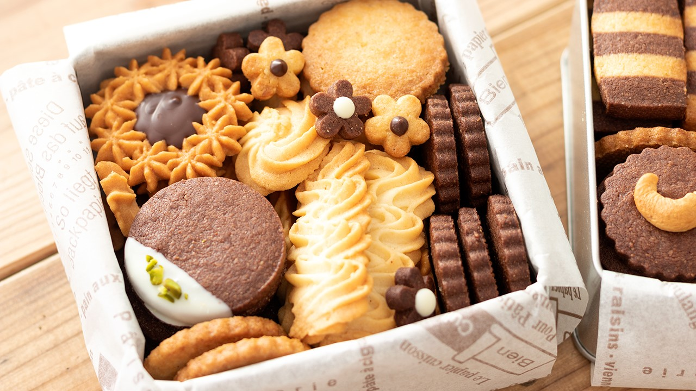
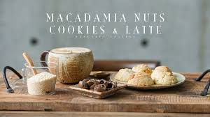
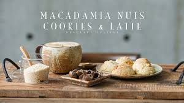
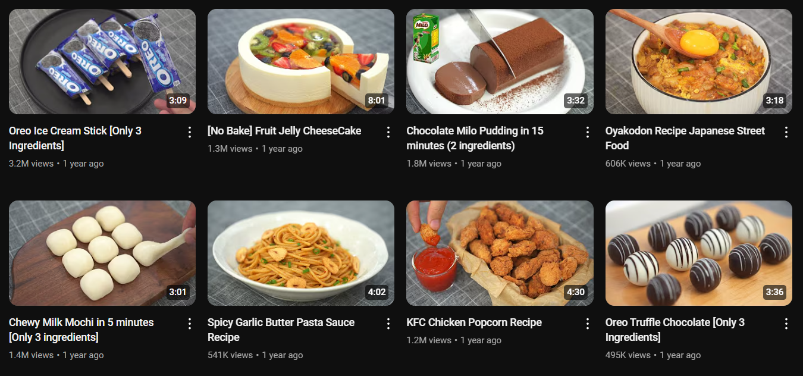
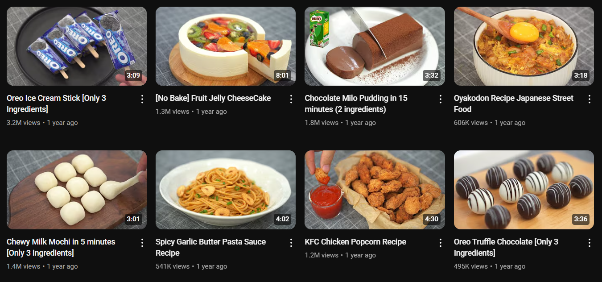

HidaMari Cooking
- Kênh Youtube hướng dẫn làm bánh của một cô gái người Nhật Bản với 4,37 triệu người đăng ký.
- Video được cập nhật mỗi thứ 6 và chủ nhật hàng tuần.
- Kênh có bố cục hướng dẫn rõ ràng và được sắp xếp theo chuyên mục như: Bánh ngọt Noel, Bánh không sử dụng bơ, Cheesecake không cần lò nướng, Bánh mùa xuân, Bánh không sử dụng trứng, Món tráng miệng không cần lò nướng, Bánh quy, Bánh ngọt cơ bản, và nhiều hơn nữa.
- Chuyên mục đặc biệt về cuộc sống thường nhật của cô cũng thu hút nhiều sự chú ý với mỗi video đều có hơn 1 triệu lượt xem.
 

>>>>>>>>>>>>>>>>>>>>>>>>>>>>>>>>>>>>>>>>>>>>>>>>>>>>>>>>>>>
Peaceful Cuisine
- Kênh Youtube hoạt động từ tháng 7 năm 2010, với hơn 2,45 triệu người đăng ký và gần 176 triệu lượt xem.
- Kênh không chỉ mang đến video hướng dẫn làm bánh và món ăn đẹp mắt, mà còn chia sẻ những đam mê khác như du lịch và cà phê.
- Dù là kênh của người Nhật, nhưng sử dụng phụ đề tiếng Anh, dễ hiểu và rõ ràng.
- Ryoya Takashima - chủ kênh, cung cấp công thức chi tiết và ngắn gọn ở phần mô tả.
 

>>>>>>>>>>>>>>>>>>>>>>>>>>>>>>>>>>>>>>>>>>>>>>>>>>>>>>>>>>>
Nino’s Home
- Với hơn 6 triệu người theo dõi, kênh nổi bật nhờ những video hướng dẫn làm bánh ngọt, bánh mặn, bánh trái cây, và nhiều món bánh khác, phù hợp với tất cả những ai đam mê bếp núc.
- Điểm nổi bật và đặc trưng: Kênh Nino’s Home không chỉ thu hút người xem nhờ vào những món bánh đẹp mắt và ngon miệng mà còn bởi cách trình bày rất dễ hiểu và thân thiện của Nino.
 

>>>>>>>>>>>>>>>>>>>>>>>>>>>>>>>>>>>>>>>>>>>>>>>>>>>>>>>>>>>